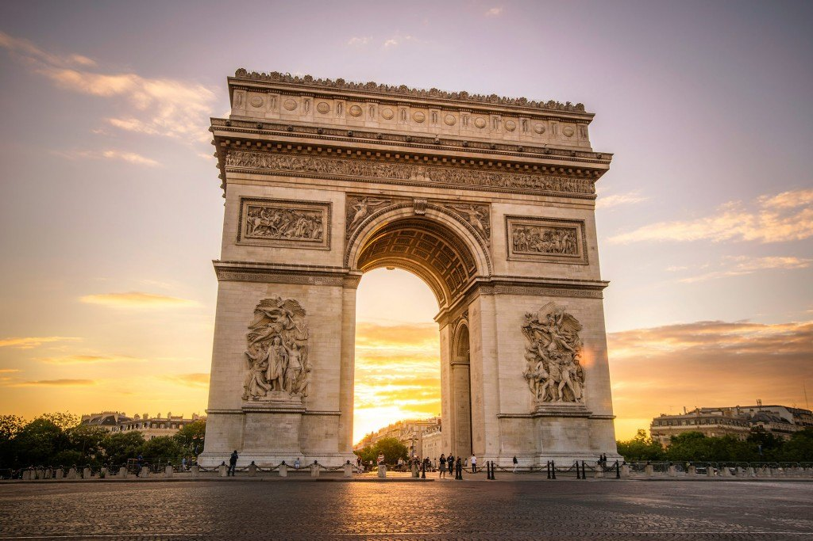

PARIS
The City of Lights
Paris, capital of France, is one of the most important and influential cities in the world.
In terms of tourism, Paris is the second most visited city in Europe after London.
Paris, France's capital, is a major European city and a global center for art, fashion, gastronomy and culture. Its 19th-century cityscape is crisscrossed by wide boulevards and the River Seine. Beyond such landmarks as the Eiffel Tower and the 12th-century, Gothic Notre-Dame cathedral, the city is known for its cafe culture and designer boutiques along the Rue du Faubourg Saint-Honoré.
Paris is not just the capital of France; it is the capital of fashion and the city of love. Located by the River Seine in the north of France, Paris is reputed for being the most beautiful and romantic city in the world. It is overwhelmed with culture, history, iconic architecture, arty treasures, delicious food and exciting fashion. Europe's most enchanting city, Paris is known for its many monuments, especially the Eiffel Tower, Notre-Dame Cathedral, Arc de Triomphe, Opéra Garnier, Les Invalides, etc.
Paris was home to some of the best artists through history; hence, it harbors treasures and antiques from the masters like Picasso, Van Gogh, Monet, Dalí, and Renoir. Paris (and the whole of France) is famous for its food and drinks; from cozy little cafes to one of its many Michelin-starred restaurants – the food is prepared and presented with perfection here. Whether you’re a first-timer or regular visitor, Paris always seems magical as there are so many places to explore. It’s no wonder that the city is one of the most popular tourist destinations in the world and welcomes over 45 million visitors every year.
3 / 3

Arc De Triomphe